Ratnagiri
Maharashtra — Alphonso mango and guava belt; HACCP-certified campus.
Who we are
Exotic Fruits Pvt. Ltd. is a government-recognised Star Export House. We manufacture tropical fruit pulps, purees, and concentrates in aseptic, OTS canned, and frozen bulk formats for beverage, dairy, confectionery, and baby-food factories.
The commercial desk sits in Mumbai. Processing campuses sit next to fruit-growing regions in Ratnagiri, Nashik, Krishnagiri, and Chittoor — so crop can move from orchard to steriliser in the same harvest window.
APEDA registration, an FSSAI Central Export Licence (#10019022005421), and SGF Germany (IRMA) membership support documented export of industrial fruit ingredients.
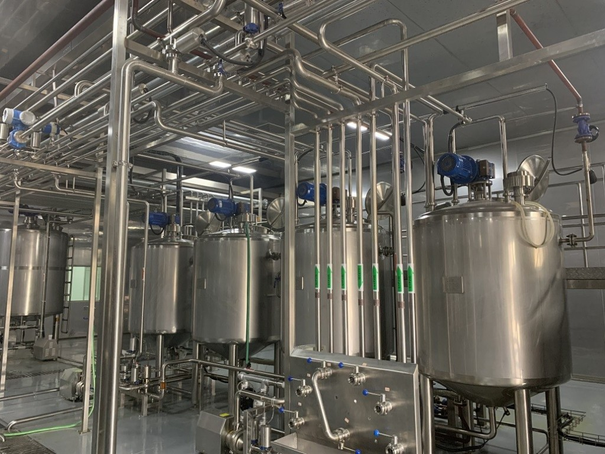
What we do
How tropical fruit becomes factory-ready pulp, puree, and concentrate for industrial lines.
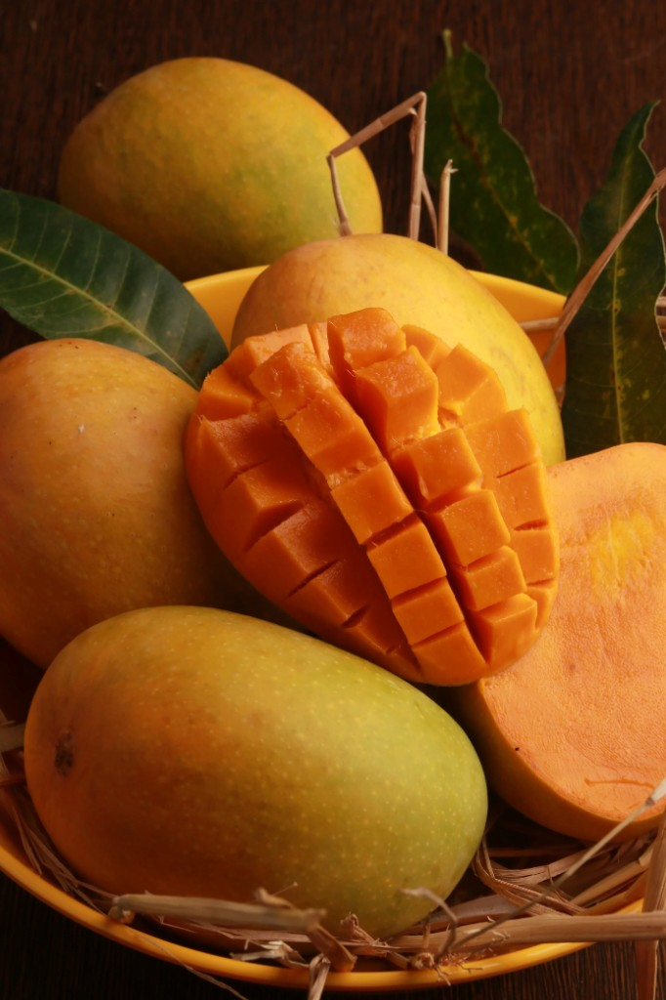
Seasonal sourcing across Indian fruit belts associated with our campuses — mango, guava, papaya, pomegranate, and tomato — timed to the harvest window.
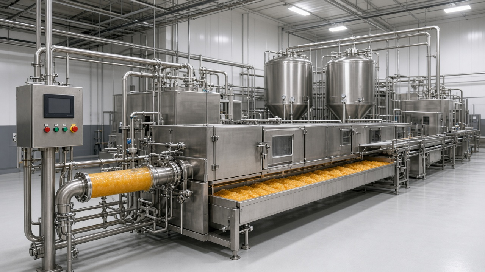
Receiving, washing, pulping, finishing, thermal treatment, and filling on stainless industrial lines for aseptic, canned, and frozen bulk output.
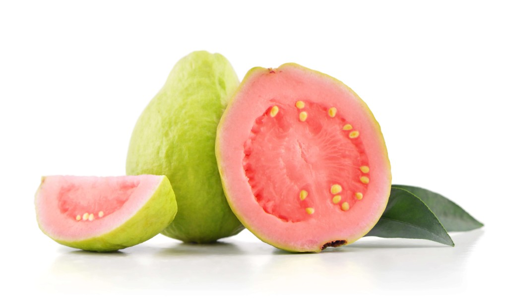
Each lot is released against colour, Brix, pH, viscosity, and microbial limits, with a batch Certificate of Analysis for the buyer’s incoming QA.
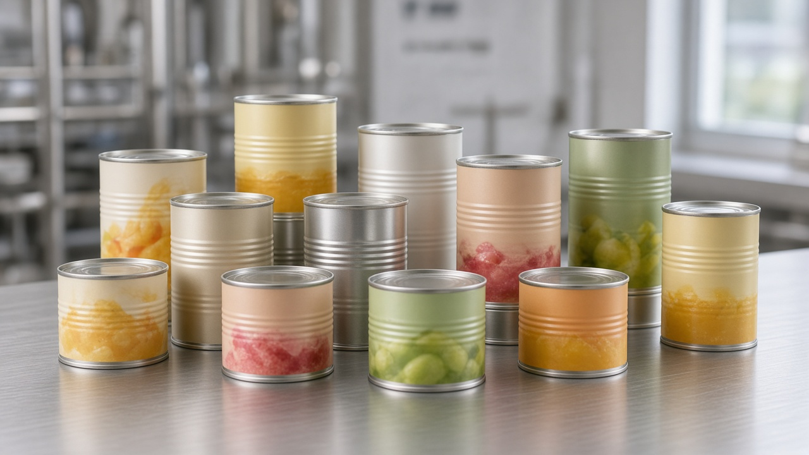
Aseptic drums, OTS cans, and frozen bulk loaded as FCL via JNPT Mumbai and Chennai Port to the destination named in the contract.
Sourcing belt
Processing campuses sit in the same regions as the crop, so intake stays short and lots stay traceable to the belt.
Maharashtra — Alphonso mango and guava belt; HACCP-certified campus.

Maharashtra — tomato and pomegranate belt serving paste and NFC programmes.

Tamil Nadu — Totapuri and commercial mango belt; HACCP-certified campus.
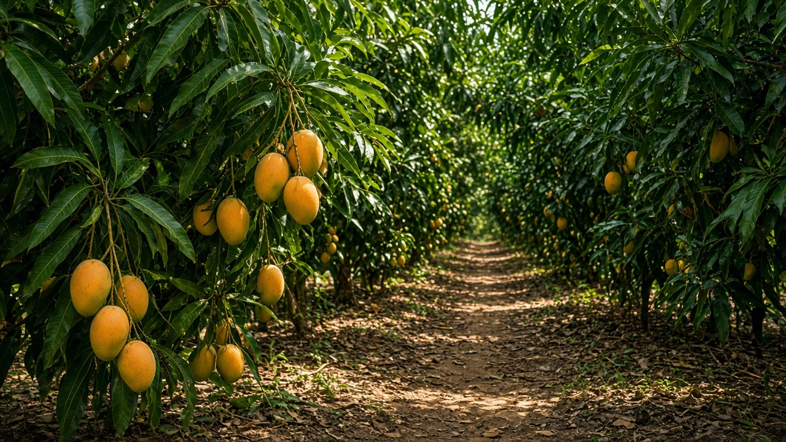
Andhra Pradesh — mango, guava, and papaya processing for industrial pulp and puree.
Capabilities
With solid experience in tropical fruit processing, Exotic has a clear edge for industrial buyers — rooted in fruit expertise, plant locations, formats, and release discipline.
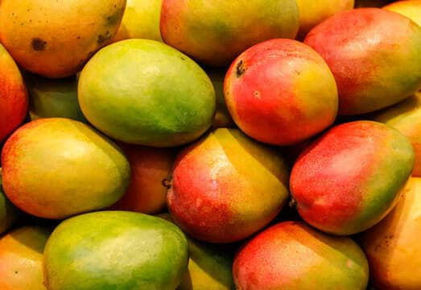
01
Competent professionals with rich experience across the fruit processing industry, and deep expertise in fruit management and procurement. The catalogue spans mango (Alphonso, Kesar, Totapuri, Raspuri), guava, papaya, pomegranate NFC, and tomato paste for factory lines.
02
Sophisticated processing plants located close to fruit-growing areas minimise handling and transportation and help maintain natural fruit characteristics. Four campuses — Ratnagiri, Nashik, Krishnagiri, and Chittoor — sit on the fruit map so peak crop reaches the steriliser in the same harvest window.
03
Choice of packaging — aseptic, OTS cans, and frozen — as per customer requirements and under stringent hygiene standards. The same industrial pulp can ship in the format the buyer’s filling line needs.
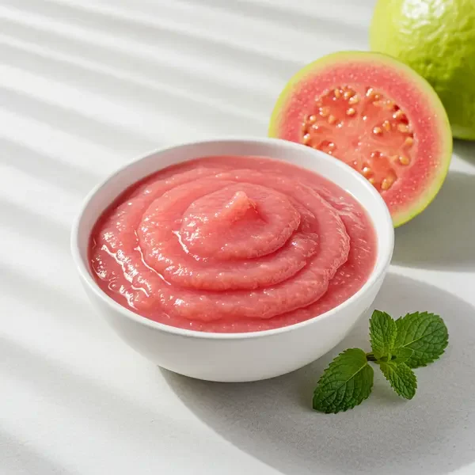
04
Customisation of product specifications to match the buyer’s TDS — Brix, acidity, colour, and pack format — so lots land ready for beverage, dairy, confectionery, and baby-food applications.
05
Consistent product and service quality, supported by modern laboratory equipment for strict adherence to norms. Colour, Brix, pH, viscosity, and microbial checks release each lot before dispatch, with a batch COA for the receiving lab.
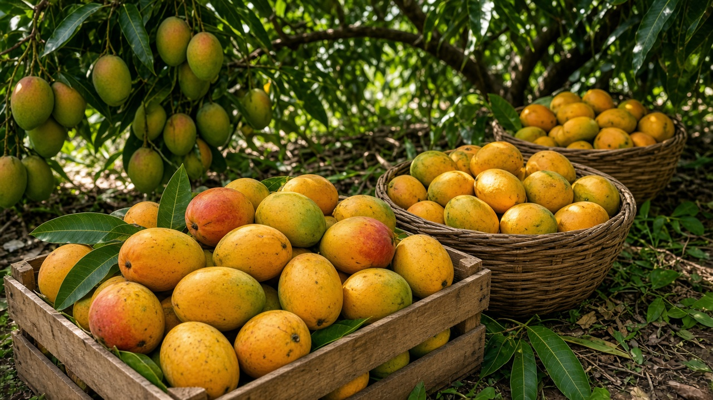
06
Scheduling of product availability to suit customer production planning through the year — aligning crop windows and FCL stuffing so industrial buyers can plan peak and off-peak intake with a responsive export desk.
Our infrastructure
Processing units sit next to the belts they serve. Open a plant card for address and contact details.
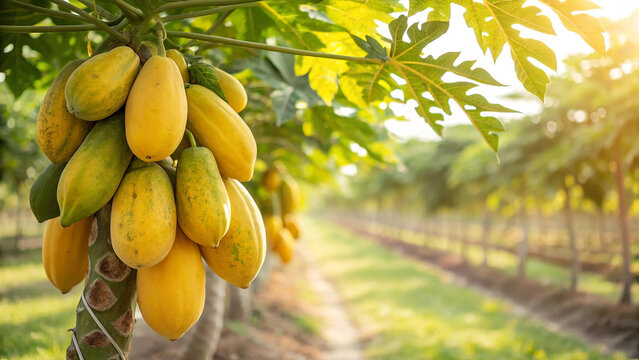
Our Vision
Exotic Fruits Pvt. Ltd. endeavours to become the preferred supplier for customers around the world, for tropical fruits and related products such as pulps, purees and concentrates, adhering to these principles:
Of our products and services — lots leave only after they meet the TDS and the micro release.
With our customers and suppliers — honest specs, on-time stuffing, and a desk that answers when a container is on the water.
In our technology and concepts — continuous improvement across aseptic, canned, and frozen processing lines.
Empowerment of our human resources and commitment to meet our social responsibilities across plants and communities we work with.
What makes us different
Practical reasons processors choose Exotic Fruits for bulk tropical pulp and puree.
Four campuses sit next to Alphonso, Totapuri, guava, papaya, pomegranate, and tomato country. That cuts haul time and keeps peak crop on the steriliser, not on the road.
The same industrial pulp can ship aseptic drum, OTS can, or frozen bulk, so a buyer’s filling line does not force a second supplier.
Brix, acidity, pH, colour, and micro are checked before the drum is marked for export, with a batch COA for the receiving lab.
Star Export House, APEDA, FSSAI export licence, and SGF membership sit behind FCL documents, not as a last-minute chase.
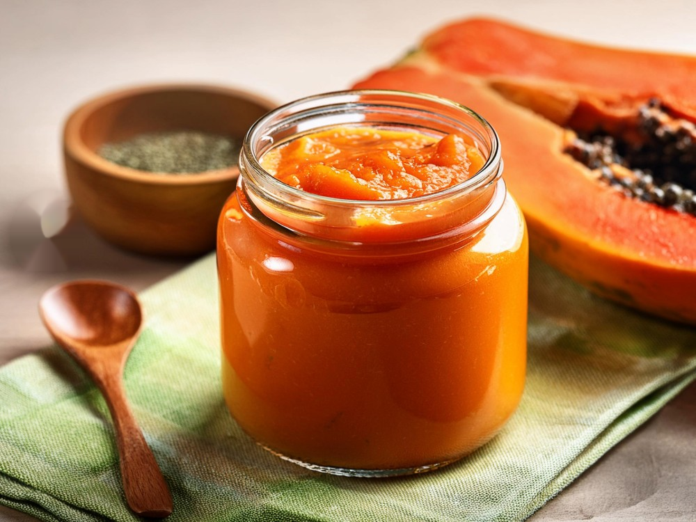
Alphonso, Kesar, Totapuri, guava, papaya, pomegranate NFC, and tomato paste — specified for beverage, dairy, bakery, and infant lines, not for retail jars. See how those ingredients are used in Applications.
Our global reach
Exotic Fruits supplies tropical fruit pulps, purees, and concentrates as industrial ingredients for food and beverage manufacturers worldwide. Bulk export dispatch is handled via JNPT Mumbai and Chennai Port.